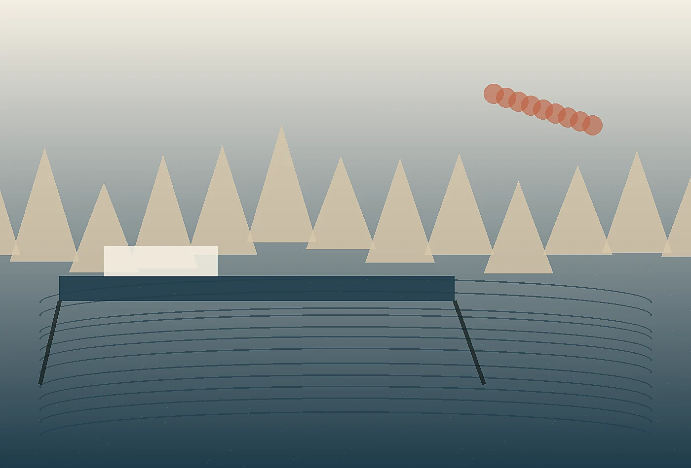

Waterfront Experience Audits
We walk routes at commuter pace, guest pace, service pace, and storm pace, then translate the observations into a practical harbor improvement brief.
Explore serviceWabi-sabi coastal strategy studio
Explore the service architecture behind Kanso Current. Each offer is designed to create visible improvement, durable internal habits, and a client experience that feels intentionally made rather than borrowed.
Plan a quieter edge
Kanso Current offers three core services, each built to move from diagnosis to usable change. We avoid abstract strategy that cannot survive staffing, budget, weather, travel, or governance. The work is collaborative, documented, and direct enough for teams to use without translation.
Some clients need a two-week diagnostic, others need a full concept system or retained advisory during launch. We match the engagement to the decision ahead. Every format includes a clear owner, working cadence, deliverables, and criteria for success.

Recommendations are grounded in interviews, site observation, operational constraints, content review, and prototype response. Taste matters, but unsupported taste is not enough. We show the reason behind each move.
Deliverables may include journey maps, editorial guidelines, implementation checklists, service scripts, spatial notes, asset direction, measurement plans, and decision briefs. Each artifact is written for the people who will actually use it.
We also include a stewardship note for the people who inherit the work. It explains what should be reviewed monthly, what can be adjusted seasonally, and which details should not be changed without fresh observation. That small layer keeps the project from becoming a one-time presentation and helps managers defend thoughtful decisions when pressure returns.
A final review translates the work into plain operating language: what to watch, who owns each adjustment, and how to judge whether the change is reducing friction. That clarity is especially important in waterfront settings, where seasonal staff, public partners, vendors, and visitors all interact with the same physical cues in different ways.